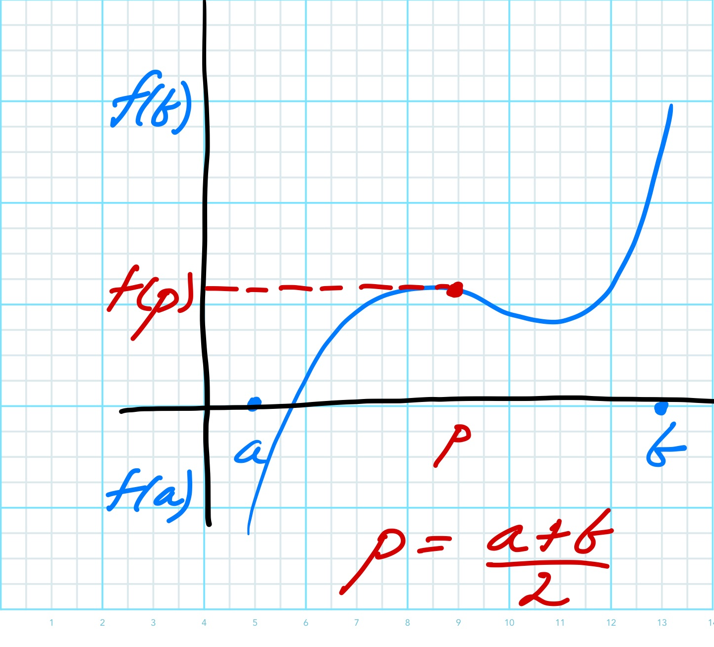
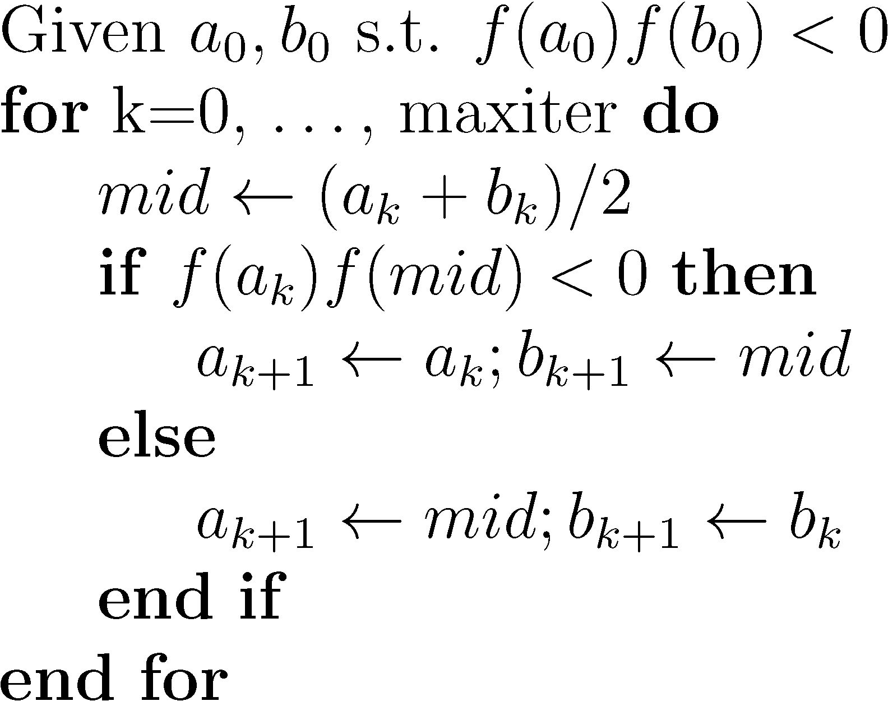

One of the simplest methods for solving a nonlinear equation is known as the bisection method. The main advantage is the robustness of the method - if the method is applicable to the problem, it is guaranteed to find a solution. On the other hand, the method can often take far more iterations than some of the other methods we will discuss.
Let’s first describe the general method.

Figure 7.1: Bisection Method
Idea
Suppose that we happen to know two points where the function is of opposite sign as in Figure 7.1. Using the Intermediate Value Theorem we also know that if the function is continuous, then the function must take every value in between the two values and, in particular, it must be equal to 0 somewhere in the interval.
Mathematically, if \(f(x) \in C[a,b]\) and \(f(a) \cdot f(b) < 0\), then there exists an \(x^{*} \in [a,b]\) such that \(f(x^{*}) = 0\). This leads us to the following general procedure:
Start with an interval \([a,b]\) such that \(f(a) \cdot f(b) < 0.\)
Cut the interval in half (bisect).
Evaluate the function \(f\) at the midpoint of the interval.
Choose whichever sub-interval contains a sign change.
Repeat as necessary.
Writing this in pseudocode might lead to something like the following:

Figure 7.2: Bisection Algorithm
Example 7.1 Consider \(f(x) = x^3 + 4x^2 - 10 = 0\) on \([1,2]\) where \(x^{*} = 1.365\). We should first check that the function has opposite signs on the given interval:
# Call Bisection functionxstar = bisect(x0, a, b, ftol)
Bisection converged after 22 iterations at:
x = 3.085119e-01 with f(x) = -8.565410e-07
7.2 Stopping (Convergence) Criteria
Before proceeding further, we should discuss when and how to terminate an iterative algorithm. This decision is one of great importance in real-world applications because many of the problems are expensive or time consuming. Both the expense and time are usually a result of the complexity of the function being evaluated. In some cases it could take hours if not days of computer time to yield one function evaluation. In these cases, it is not unusual that a scientist or an engineer will decide to terminate an algorithm based simply on how much computer time they are willing to use.
In practice, there are numerous possibilities for convergence criteria, each with pros and cons. The most obvious would be to check to see how close we are to our desired solution, but in general this would be impossible since we don’t know what the solution is ahead of time (except for academic exercises). On the other hand, it is not unreasonable to assume that we might have some sort of bound, for example in some cases, the solution might be known to be positive or have a maximum value.
Suppose that an iterative algorithm has produced a sequence of iterates starting with an initial guess:
\[
x_0, \ x_1, \ x_2, \ \ldots, \ x_k.
\]One logical approach is to take a look at the magnitude of \(f(x_k)\) and check to see how close we are to zero:
\[
| f(x_{k}) | < atol
\]
Another frequent approach is to stop an iteration when “sufficient” progress has been made. In other words, an engineer is simply interested in reducing the initial function value by some fraction, i.e.
\[
\frac{| f(x_{k}) |}{|f(x_0)|} < ftol
\]
In general, these are good approaches, but there are cases for which progress towards the solution may be slow and little is to be gained from each new iteration. In this case, we may decide to stop if we believe we are not making sufficient progress towards a solution. This could be construed, for example, if the difference between successive iterates becomes small:
\[
|x_{k+1} - x_{k} | < xtol
\]
Here, we should note that it might also make sense to check that the relative step size is small:
\[
\frac{|x_{k+1} - x_{k} |}{|x_{k+1}|} < rtol
\]
In practice, many algorithms will employ some combination of these (and sometimes others). Experience and knowledge of the specific problem are usually needed to ensure that we don’t stop too early or waste time iterating for too long.
7.3 Convergence of Bisection method
One of the first questions one should ask about any iterative method is when and under what conditions do we expect that it might converge to a solution. In the case of the bisection method, it turns out that the only condition we need to have is that the function \(f(x)\) is continuous, given that the two initial points yield functions values with opposite signs.
The alert student should recognize that this is really just a consequence of Theorem 1.2 - the Intermediate Value Theorem.
Moreover, if these conditions hold, we can prove that the error bound between the solution and the iterates \(x_n\) can be given by:
Notice that for \(k=0\) all we’re really saying is that the root must lie within the given interval \([a_0, b_0]\). At the next step, the interval and hence the error is cut in half so that
\[
|x^* - x_1| \leq \frac{b_0 - a_0}{2}.
\]
At each iteration, the interval is cut in half by construction, so that at the \(kth\) iteration we get our desired result.
As constructed then, the bisection method cannot fail. This type of method is known as a robust algorithm.
Additionally, we can use the error bound to estimate the number of iterations required to achieve a certain accuracy, \(\epsilon\).
Using Equation 7.1 we want \[
| x^* - x_k | \leq \frac{b-a}{2^k} \leq \epsilon.
\] Taking logs of both side we have \[
\log (b-a) - \log{2^k} \leq \log \epsilon ,
\] or rearranging \[
\log (b-a) - \log \epsilon \leq k \log 2 .
\] If we would like to have the error be less than \(\epsilon\) then solving for the number of iterations gives us \[
k \geq \frac{\log [ (b-a)/\epsilon]}{\log 2} .
\tag{7.2}\]
For example, let’s set \(\epsilon = 0.001\) and \(a=1, b=2\). Then solving for \(k\), we have \[
k \geq \frac{\log [ 1/ 0.001]}{\log 2} = \frac{3}{0.301} \approx 9.97,
\] so \(k=10\) iterations should suffice to achieve an error tolerance of \(\epsilon = 0.001\).
7.4 Summary
To recap, bisection is a robust algorithm for finding the zero of a nonlinear function. It needs to have two initial points where the function value is of opposite sign, but it is guaranteed to converge. The advantages and disadvantages can be summarized as follows:
Bisection Method Summary
Advantages
Disadvantages
Always converges, i.e. robust algorithm
Need to provide a specific interval, with 2 points where function is of opposite sign
Error bound easily derived and can be used to estimate number of iterations need to achieve a desired tolerance
Slow convergence - error only decreases by 1/2 at each iteration